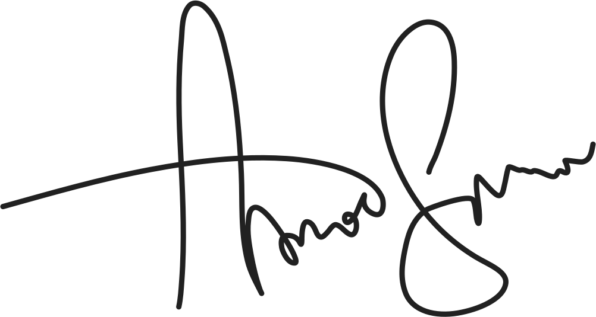
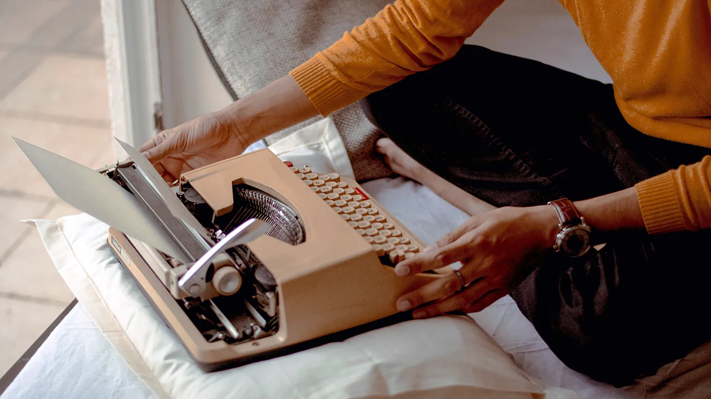

Amanda Swan is a visionary children's author whose stories transport young
readers into enchanting worlds.
"Books have the power to whisk us away on magical adventures, ignite our
imaginations, and sow seeds of wonder in young hearts."
Amanda Swan is a celebrated author specializing in children's literature,
known for her enchanting stories that captivate young imaginations. Born on
June 8, 1980, in a quaint town on the East Coast, Amanda's love for writing
blossomed during her childhood adventures in nature.


In addition to her writing, Amanda is an advocate for childhood literacy and
regularly conducts interactive storytelling sessions in schools and
libraries across the country.